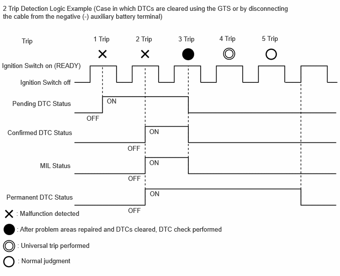
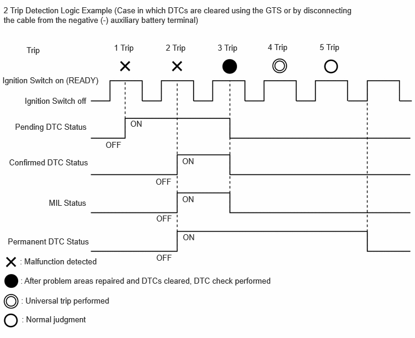
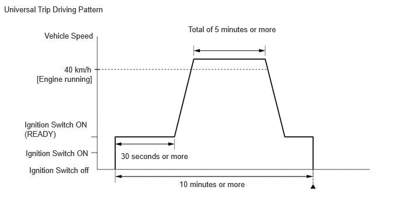
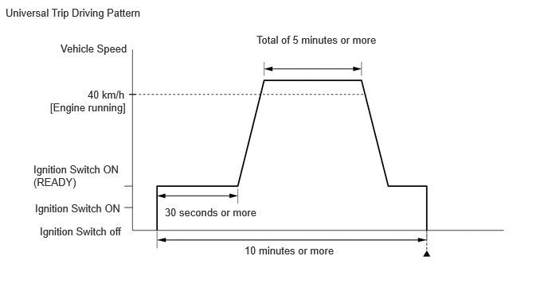

| Last Modified: 10-07-2025 | 6.11:8.1.0 | Doc ID: RM100000002KD0T |
| Model Year Start: 2024 | Model: Tacoma HV | Prod Date Range: [03/2024 - ] |
| Title: T24A-FTS (ENGINE CONTROL): SFI SYSTEM (for 1Motor-HEV Model): DTC CHECK / CLEAR; 2024 - 2026 MY Tacoma HV [03/2024 - ] | ||
DTC CHECK / CLEAR
NOTICE:
When the diagnosis system is changed from normal mode to check mode or vice versa, all DTCs and Freeze Frame Data recorded in normal mode are cleared. Before changing modes, always check and make a note of DTCs and Freeze Frame Data.
HINT:
- DTCs which are stored in the ECM can be displayed on the GTS. The GTS can display the confirmed, pending and permanent DTCs.
- If a malfunction is detected during the current driving cycle, confirmed and permanent DTCs are stored.
- Some DTCs are not stored if the ECM does not detect the same malfunction again during a second consecutive driving cycle. However, such malfunctions, detected on only one occasion, are stored as pending DTCs.
- Confirmed and pending DTCs can be cleared by using the GTS or by disconnecting the cable from the negative (-) auxiliary battery terminal. However, permanent DTCs cannot be cleared using either of these two methods.
- After clearing current DTCs using the GTS (or by
disconnecting the cable from the negative (-)
auxiliary battery terminal), permanent DTCs can be
cleared when the universal trip is performed and then
the system is determined to be normal for the
relevant DTCs. The driving pattern to obtain a normal
judgment is described under the "Confirmation Driving
Pattern" for the respective DTC.
To clear permanent DTCs, all of the following conditions must be met:
- There is a history that universal trip driving was performed.
- The vehicle has been judged as normal for 1 trip. (not for misfire and fuel system DTCs)
- No malfunctions are detected.
2 Trip Detection Logic Examples
|
Pending DTC |
Store condition |
Malfunction detected |
|
Clear condition |
System determined to be normal or DTCs cleared using GTS or Cable disconnected from negative (-) auxiliary battery terminal |
|
|
Confirmed DTC |
Store condition |
Malfunction detected (2nd trip) |
|
Clear condition |
No malfunctions in 40 driving cycles or DTCs cleared using GTS or Cable disconnected from negative (-) auxiliary battery terminal |
|
|
Permanent DTC |
Store condition |
Malfunction detected (2nd trip) |
|
Clear condition |
Ignition switch turned to ON after normal judgment obtained in 3 consecutive driving cycles or After DTCs cleared using GTS or cable disconnected from negative (-) auxiliary battery terminal, universal trip performed and normal judgment obtained for 1 trip (not for misfire and fuel system DTCs) or After DTCs cleared using GTS or cable disconnected from negative (-) auxiliary battery terminal, malfunction not detected when universal trip driving performed (misfire and fuel system DTCs) |
|
|
MIL |
ON |
Malfunction detected (2nd trip) |
|
OFF |
Ignition switch turned to ON after normal judgment obtained in 3 consecutive driving cycles or DTCs cleared using GTS or Cable disconnected from negative (-) auxiliary battery terminal |
 

HINT:
- Obtaining a normal judgment and performing a universal trip driving pattern can be done in the same driving cycle or in different driving cycles.
- It is unnecessary to obtain a normal judgment if the output DTCs are misfire or fuel system DTCs.
OUTLINE
- After clearing current DTCs using the GTS (or by disconnecting the cable from the negative (-) auxiliary battery terminal), permanent DTCs can be cleared when the universal trip is performed and then the system is determined to be normal for the relevant DTCs. The driving pattern to obtain a normal judgment is described under the "Confirmation Driving Pattern" for the respective DTC.
- To clear permanent DTCs, all of the following
conditions must be met:
- There is a history that universal trip driving was performed.
- The vehicle has been judged as normal for 1 trip. (not for misfire and fuel system DTCs)
- No malfunctions are detected.
CLEAR PERMANENT DTC
(a) Enter the following menus: Powertrain / Engine / Trouble Codes.
Powertrain > Engine > Trouble Codes
HINT:
If "PERMANENT" in the top right of the screen displays "YES", permanent DTCs are stored.
(b) Select the "Generic" tab.
(c) Check if permanent DTCs are stored.
HINT:
If permanent DTCs are not output, it is not necessary to continue this procedure.
(d) Clear the DTCs.
Powertrain > Engine > Clear DTCs
NOTICE:
Do not clear the DTCs or disconnect the cable from the auxiliary battery terminal after performing this step.
(e) Perform the universal trip.
HINT:
The driving pattern to obtain a normal judgment and the universal trip driving can be performed consecutively in the same driving cycle.
 

- Turn the ignition switch to ON (READY) and wait for 30 seconds or more.
- Drive the vehicle at 40 km/h (25 mph) or more for
a total of 5 minutes or more.
CAUTION:
When performing a driving pattern, obey all speed limits and traffic laws.
HINT:
It is possible to complete the drive pattern even if the vehicle decelerates to less than 40 km/h (25 mph) during the driving cycle provided that the vehicle is driven at 40 km/h (25 mph) or more for a total of 5 minutes.
- Allow 10 minutes or more to elapse from the time the engine started.
(f) Turn the ignition switch off and wait for 2 minutes or more.
(g) Enter the following menus: Powertrain / Engine / Trouble Codes.
Powertrain > Engine > Trouble Codes
(h) Check that the permanent DTCs have been cleared.
HINT:
If permanent DTCs are not output, it is not necessary to continue this procedure.
(i) Perform the normal judgment procedure in the respective confirmation driving pattern of each output DTC.
HINT:
- Confirmation driving patterns do not need to be performed for misfire and fuel system DTCs.
- Do not turn the ignition switch off by mistake during this step.
(j) With the ignition switch ON (READY) wait for 5 seconds or more. (Except when the ignition switch is already turned to ON (READY) or the engine is running.)
(k) Turn the ignition switch off and wait for 2 minutes or more.
(l) Enter the following menus: Powertrain / Engine / Trouble Codes.
Powertrain > Engine > Trouble Codes
(m) Check that the permanent DTCs have been cleared.